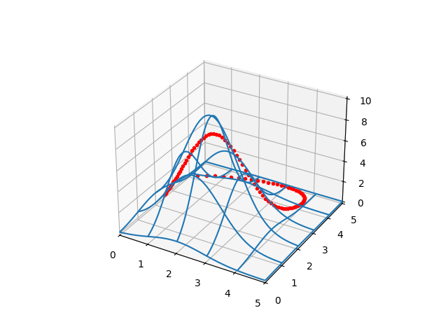

Yükseklik Fonksiyonu (Tepeler) Arasından En Düz, Optimal Yürüyüş Yolunu Bulmak
Elimizde bir alan içindeki yükseklikleri veren bir fonksiyon $f(x,y)$ olduğunu düşünelim. Acaba verili bir başlangıç ve bitiş noktası arasındaki en "rahat" gidiş yolunu nasıl buluruz?
Yükseklikler bir $E(x,y)$ fonksiyonunda olsun. Yolları nasıl temsil ederiz? Bir parametrik eğri kullanabiliriz, mesela
$$ x(t) = a_0 + a_1 t + a_2 t^2 + a_3 t^3 $$
$$ y(t) = b_0 + b_1 t + b_2 t^2 + b_3 t^3 $$
İstediğimiz derecede polinom parametrize eğrileri nasıl yaratacağımızı biliyoruz [3]. Böylece doğru, optimal bir yolu bulmak demek $a_0,a_1,a_2,a_3,b_0,b_1,b_2,b_3$ katsayılarını doğru bulmak demek olacaktır. Bir optimizasyon problemi yani.
Peki o zaman optimize, minimize edilecek bedel fonksiyonu ne olmalı? Burada farklı yaklaşımlar olabilir. Kimisi eğri altına düşen yüksekliklerin toplamını bir çizgi entegrali ile hesaplamak isteyebilir. Fakat bu yaklaşım yüksekliklerden genel olarak uzak dursa da mesela çok inişli çıkışlı yolları hala tercih eder, ama bu tür yolların yürüyüş olarak yorucu olacağını biliyoruz. 1000 metrelik bir tepeye çıkıp onun üzerinde düz yürümek habire 1000 metreyi inmek çıkmaktan çok daha rahat.
Şu şekilde bir bedel belki daha iyi; Bir eğriyi düşünelim, onun $z$ eksenindeki yansıması da bir eğridir, $x,y$ düzlemindeki yansıması bir başka eğri. Bu eğrilerin uzunluğunu hesaplarsak [2] ve dikey yöndeki uzunluğu yatay olan uzunluğu farklı ağırlıklarla çarpıp toplarsak bu bir bedeli temsil eder. Ağırlık dikey/yatay uzunluklar için 5/1 oranında olabilir, o zaman yatay yöndeki bir uzunluk / katedilen yol dikeye göre 5 kat daha tercih edilir olur.
Önce yükseklikleri ve eğrileri iki örnek üzerinde görelim. Bir rasgele tepe, ve bir rasgele yol çiziyoruz,
from mpl_toolkits.mplot3d import Axes3D
from scipy.spatial.distance import cdist
from matplotlib import cm
def gfunc(x, y):
s1 = 2.2; x1 = 2.0; y1 = 2.0
g1 = np.exp( -4 *np.log(2) * ((x-x1)**2+(y-y1)**2) / s1**2)
return g1 * 10.0
def plot_surf_path(a0,a1,a2,a3,a4,b0,b1,b2,b3,b4):
D = 50
x = np.linspace(0,5,D)
y = np.linspace(0,5,D)
xx,yy = np.meshgrid(x,y)
zz = gfunc(xx,yy)
fig = plt.figure()
ax = fig.gca(projection='3d')
ax.set_xlim(0,5)
ax.set_ylim(0,5)
surf = ax.plot_wireframe(xx, yy, zz,rstride=10, cstride=10)
t = np.linspace(0,1.0,100)
x = a0 + a1*t + a2*t**2 + a3*t**3 + a4*t**4
y = b0 + b1*t + b2*t**2 + b3*t**3 + b4*t**4
ax.plot3D(x, y, gfunc(x,y),'r.')
# 1. gidis yolunun tanimi, uzun yoldan dolanarak gidiyor
a1,a2,a3 = 1.5, 8.1, 4.0
b1,b2,b3 = 0.3, 0.4, 23.3
a0,b0=(1.0,1.0)
ex,ey=(0.3,4.0)
a4 = ex - a0 - (a1+a2+a3)
b4 = ey - b0 - (b1+b2+b3)
test_coefs1 = (a0,a1,a2,a3,a4,b0,b1,b2,b3,b4)
plot_surf_path(a0,a1,a2,a3,a4,b0,b1,b2,b3,b4)
plt.savefig('calc_multi_40_elev_01.png')

Eğer üstteki gidiş yoluna kuşbakışı, iki boyutlu ortamda bakmak istersek,
t = np.linspace(0,1.0,100)
x = a0 + a1*t + a2*t**2 + a3*t**3 + a4*t**4
y = b0 + b1*t + b2*t**2 + b3*t**3 + b4*t**4
plt.xlim(0,5.0)
plt.ylim(0,5.0)
plt.plot(x,y)
plt.savefig('calc_multi_40_elev_02.png')

Bu biraz önce bahsettiğimiz yatay düzlemdeki yansıma.
Şimdi ikinci bir gidiş yoluna bakalım, başlangıç noktası aynı ama bitiş farklı,
# 2. gidis yolunun tanimi, dik cikip iniyor
a1,a2,a3 = 1.5, 3.0, 1.0
b1,b2,b3 = 0.0, 1.0, 1.0
a0,b0=(1.0,1.0)
ex,ey=(0.3,4.0)
a4 = ex - a0 - (a1+a2+a3)
b4 = ey - b0 - (b1+b2+b3)
test_coefs2 = (a0,a1,a2,a3,a4,b0,b1,b2,b3,b4)
plot_surf_path(a0,a1,a2,a3,a4,b0,b1,b2,b3,b4)
plt.savefig('calc_multi_40_elev_03.png')

Bu yolları tabii ki rasgele parametreler üzerinden yarattık, bunlar optimal yollar değiller.
Optimallik için gereken uzunluk hesabına gelelim. Bu hesap için formül, dikey için $I_v$ yatay için $I_h$
$$ I_v = \int_{t=0}^{t=1} \sqrt{1 + \left(\frac{\mathrm{d} z}{\mathrm{d} t} \right)^2 } \mathrm{d} t $$
$$ I_h = \int_{t=0}^{t=1} \sqrt{ \left(\frac{\mathrm{d} x}{\mathrm{d} t} \right)^2 + \left(\frac{\mathrm{d} y}{\mathrm{d} t} \right)^2 } \mathrm{d} t $$
Formülde görülen $\mathrm{d} z/\mathrm{d} t$, $\mathrm{d} x/\mathrm{d} t$ ve $\mathrm{d} y/\mathrm{d} t$, parametrik eğri üzerinden alınacak tabii ki. Problem çözümü açısından $\mathrm{d} z/\mathrm{d} t$ hesabı külfetli olabilir, çünkü $z = f(x,y)$ yükşelik fonksiyonundur. Üstteki örnekteki yükseklik fonksiyonu basit, ama daha çetrefil durumlarda da kullanabileceğimiz bir yaklaşım daha iyi olur. Bu sebeple $\mathrm{d} z/\mathrm{d} t$ türevini hesapsal yapacağız.
Ama yatay türevler $\mathrm{d} x/\mathrm{d} t$ ve $\mathrm{d} y/\mathrm{d} t$ için, türevi almak, kare, toplam, karekök hesaplarını sembolik olarak yapabiliriz, çünkü bu formül polinom, formu şimdiden belli.
import sympy
vars = 't a0 a1 a2 a3 b0 b1 b2 b3 gamma x y'
t, a0, a1, a2, a3, b0, b1, b2, b3, gamma, x, y = sympy.symbols(vars)
xdef = a0 + a1*t + a2*t**2 + a3*t**3 + a4*t**4
ydef = b0 + b1*t + b2*t**2 + b3*t**3 + b4*t**4
dxdt = sympy.diff(xdef,t)
print (dxdt)
dydt = sympy.diff(ydef,t)
print (dydt)
sqrtdef = sympy.sqrt(sympy.diff(xdef,t)**2 + sympy.diff(ydef,t))
print (sqrtdef)
a1 + 2*a2*t + 3*a3*t**2 - 57.2*t**3
b1 + 2*b2*t + 3*b3*t**2 - 84.0*t**3
sqrt(b1 + 2*b2*t + 3*b3*t**2 - 84.0*t**3 + (a1 + 2*a2*t + 3*a3*t**2 - 57.2*t**3)**2)
Entegraller $I_v,I_h$ hesapları da sayısal yapılacak.
Hepsini bir araya koyarsak, uzunluklar (entegraller) üzerinden bir bedel elde ediyoruz, ve bu bedeli minimize edecek eğri parametrelerini bulmak için ise optimizasyon işletiyoruz. Optimizasyon kısıtlamalar içerecek, eğri parametrelerinin -5/+5 arasında olmasını istiyoruz mesela.
from scipy.optimize import minimize, Bounds, SR1, BFGS
import numpy as np
import matplotlib.pyplot as plt
from mpl_toolkits.mplot3d import Axes3D
from scipy.spatial.distance import cdist
from matplotlib import cm
import util
def trapz(y, dx):
vals = y[1:-1]
vals = vals[vals>0.0]
return (y[0]+np.sum(vals*2.0)+y[-1])*(dx/2.0)
def find_path(ex,ey,a0,b0):
def calc_int(pars):
a1,a2,a3,b1,b2,b3=pars
a4 = ex - a0 - (a1+a2+a3)
b4 = ey - b0 - (b1+b2+b3)
def gfunc(t):
t = t[0]
x = a0 + a1*t + a2*t**2 + a3*t**3 + a4*t**4
y = b0 + b1*t + b2*t**2 + b3*t**3 + b4*t**4
s1 = 2.2; x1 = 2.0; y1 = 2.0
g1 = np.exp( -4 *np.log(2) * ((x-x1)**2+(y-y1)**2) / s1**2)
return g1*10.0
ts = np.linspace(0.0,1.0,100)
dzs = np.array([util._approx_fprime_helper([t],gfunc)[0] for t in ts])
tmp = np.sqrt(1.0+(dzs**2.0))
Iv = trapz(tmp, 1/100.)
tmp = np.array([b1 + 2*b2*t + 3*b3*t**2 - 112.0*t**3 + (a1 + 2*a2*t + 3*a3*t**2 - 65.2*t**3)**2 for t in ts])
tmp = tmp[tmp>0.0]
tmp = np.sqrt(tmp)
Ih = trapz(tmp, 1/100.)
res = Iv*5 + Ih*1
return res
LIM = 5.0
# rasgele secilmis baslangic degerleri
a1,a2,a3 = 0,0,0
b1,b2,b3 = 0,0,0
x0 = a1,a2,a3,b1,b2,b3
opts = {'maxiter': 300, 'verbose': 0}
res = minimize (fun=calc_int,
x0=x0,
method='trust-constr',
hess = BFGS (),
bounds=Bounds([-LIM, -LIM, -LIM, -LIM, -LIM, -LIM],
[LIM, LIM, LIM, LIM, LIM, LIM]),
options=opts)
return res
a0,b0=(1.0,1.0)
ex,ey=(0.3,4.0)
res = find_path(ex,ey,a0,b0)
print ('res',res)
print ('res',res['x'])
a0,b0=(4.0,1.0)
ex,ey=(1.0,4.0)
res = find_path(ex,ey,a0,b0)
print ('res',res)
print ('res',res['x'])
res barrier_parameter: 6.400000000000003e-06
barrier_tolerance: 6.400000000000003e-06
cg_niter: 1604
cg_stop_cond: 2
constr: [array([-1.08548354, -0.36789632, -0.20897387, 0.2395503 , 0.29868552,
0.00380265])]
constr_nfev: [0]
constr_nhev: [0]
constr_njev: [0]
constr_penalty: 1.0
constr_violation: 0.0
execution_time: 50.29004144668579
fun: 33.11613644482912
grad: array([-1.38273935, -0.50301313, 0.79182863, 1.80994987, 2.2042923 ,
2.09085321])
jac: [<6x6 sparse matrix of type '<class 'numpy.float64'>'
with 6 stored elements in Compressed Sparse Row format>]
lagrangian_grad: array([-1.2659412 , -0.46518832, 0.73288924, 1.67502195, 2.03938462,
1.93597495])
message: 'The maximum number of function evaluations is exceeded.'
method: 'tr_interior_point'
nfev: 2723
nhev: 0
nit: 301
niter: 301
njev: 0
optimality: 2.0393846199040575
status: 0
success: False
tr_radius: 1.8588829764195948e-08
v: [array([ 0.11679815, 0.03782481, -0.05893939, -0.13492793, -0.16490768,
-0.15487826])]
x: array([-1.08548354, -0.36789632, -0.20897387, 0.2395503 , 0.29868552,
0.00380265])
res [-1.08548354 -0.36789632 -0.20897387 0.2395503 0.29868552 0.00380265]
...
res [-0.3061632 4.76223126 4.99872105 0.41013189 4.9713953 4.9745472 ]
Bir optimal sonuç bulundu. Grafikleyelim,
a1,a2,a3,b1,b2,b3 = -1.08548354, -0.36789632, -0.20897387, 0.2395503, 0.29868552, 0.00380265
a4 = ex - a0 - (a1+a2+a3)
b4 = ey - b0 - (b1+b2+b3)
plot_surf_path(a0,a1,a2,a3,a4,b0,b1,b2,b3,b4)
plt.savefig('calc_multi_40_elev_04.png')
Yol oldukca optimal duruyor. Gereksiz iniş çıkış yok, ve yatay mesafe de minimize edilmiş.
İkinci örnek
a0,b0=(4.0,1.0)
ex,ey=(1.0,4.0)
a1,a2,a3,b1,b2,b3 = -0.3061632, 4.76223126, 4.99872105, 0.41013189, 4.9713953, 4.9745472
a4 = ex - a0 - (a1+a2+a3)
b4 = ey - b0 - (b1+b2+b3)
plot_surf_path(a0,a1,a2,a3,a4,b0,b1,b2,b3,b4)
plt.savefig('calc_multi_40_elev_05.png')

Görüldüğü gibi yol tepeden uzak durmaya uğraşmış.
Farklı Eğri Yöntemi ve Bitiş Noktası Sınırlaması
[3]'te alternatif bir eğri şekli daha gördük, lineer parçalı ya da sigmoid bazlı parametrize eğriler. Bir parametrize eğriyi
$$ x = a_0 + a_1 \sigma(t,u_1) + a_2 \sigma(t,u_2) + ... $$
$$ x = b_0 + b_1 \sigma(t,v_1) + b_2 \sigma(t,v_2) + ... $$
modelleyebilirdik, $u_1,u_2,..$ eksen $x$ için ilmik noktaları, $v_1,v_2,..$ eksen $y$ için ilmik noktaları olabilirdi ve biraz değiştirilmiş sigmoid $\sigma$ ifadesi
$$ \sigma (x,k) = (x-k) \frac{1}{1 + exp(-\alpha (x-k))} $$
Bilindidigi gibi normal sigmoid ifadesi
$$ \sigma (x) = \frac{1}{1 + exp(-\alpha x)} $$
ve $\alpha$ büyüdükçe 0'dan 1'e geçiş sertleşir.
Bu şekilde parametrize edilmiş eğri ile pek çok farklı şekil ortaya çıkartılabilir. Bitis noktasini da farkli bir sekilde optimizasyon kisitlamasi uzerinden zorluyoruz [3].
from scipy.optimize import minimize, Bounds, SR1, BFGS
import numpy as np
import matplotlib.pyplot as plt
from mpl_toolkits.mplot3d import Axes3D
from matplotlib import cm
import util
rho = 7.0
def sig(x,a):
return (x-a)*1/(1+np.exp(-rho*(x-a)))
def trapz(y, dx):
vals = y[1:-1]
vals = vals[vals>0.0]
return (y[0]+np.sum(vals*2.0)+y[-1])*(dx/2.0)
def plot_surf_path(a0,a1,a2,a3,b0,b1,b2,b3):
D = 50
x = np.linspace(0,5,D)
y = np.linspace(0,5,D)
xx,yy = np.meshgrid(x,y)
zz = gfunc(xx,yy)
fig = plt.figure()
ax = fig.gca(projection='3d')
ax.set_xlim(0,5)
ax.set_ylim(0,5)
surf = ax.plot_wireframe(xx, yy, zz,rstride=10, cstride=10)
t = np.linspace(0,5.0,100)
def sigx(t):
t = t[0]
x = a0 + \
a1*sig(t,1) + \
a2*sig(t,2) + \
a3*sig(t,3)
return x
def sigy(t):
t = t[0]
y = b0 + \
b1*sig(t,1) + \
b2*sig(t,2) + \
b3*sig(t,3)
return y
xs = np.array([sigx([tt]) for tt in t])
ys = np.array([sigy([tt]) for tt in t])
ax.plot3D(xs, ys, gfunc(xs,ys),'r.')
def find_path(ex,ey,a0,b0):
def calc_int(pars):
a1,a2,a3,b1,b2,b3=pars
def sigx(t):
t = t[0]
x = a0 + \
a1*sig(t,1) + \
a2*sig(t,2) + \
a3*sig(t,3)
return x
def sigy(t):
t = t[0]
y = b0 + \
b1*sig(t,1) + \
b2*sig(t,2) + \
b3*sig(t,3)
return y
def gfunc(t):
t = t[0]
x = sigx([t])
y = sigy([t])
s1 = 2.2; x1 = 2.0; y1 = 2.0
g1 = np.exp( -4 *np.log(2) * ((x-x1)**2+(y-y1)**2) / s1**2)
s2 = 1.2; x2 = 4.0; y2 = 1.0
g2 = np.exp( -4 *np.log(2) * ((x-x2)**2+(y-y2)**2) / s2**2)
return g1*10.0 + g2*10.0
ts = np.linspace(0.0,5.0,100)
dzs = np.array([util._approx_fprime_helper([t],gfunc)[0] for t in ts])
tmp = np.sqrt(1.0+(dzs**2.0))
Iv = trapz(tmp, 5./100)
dxs = np.array([util._approx_fprime_helper([t],sigx)[0] for t in ts])
dys = np.array([util._approx_fprime_helper([t],sigy)[0] for t in ts])
tmp = np.power(dxs,2) + np.power(dys,2)
tmp = tmp[tmp>0.0]
tmp = np.sqrt(tmp)
Ih = trapz(tmp, 5./100)
res = Iv*5.0 + Ih*1.0
#print (res)
return res
LIM = 2.0
a1,a2,a3,b1,b2,b3 = 0.1, 0.1, 0.1, 0.1, 0.1, 0.1
x0 = a1,a2,a3,b1,b2,b3
opts = {'maxiter': 50, 'verbose': 0}
def conx(x):
aa1,aa2,aa3,bb1,bb2,bb3 = x
a = a0+aa1*(5.0-1.0)+aa2*(5.0-2.0)+aa3*(5.0-3.0)-ex
return a
def cony(x):
aa1,aa2,aa3,bb1,bb2,bb3 = x
b = b0+bb1*(5.0-1.0)+bb2*(5.0-2.0)+bb3*(5.0-3.0)-ey
return b
cons = [{'type':'eq', 'fun': conx}, {'type':'eq', 'fun': cony}]
res = minimize (fun=calc_int,
x0=x0,
method='trust-constr',
hess = BFGS (),
bounds=Bounds([-LIM, -LIM, -LIM, -LIM, -LIM, -LIM],
[ LIM, LIM, LIM, LIM, LIM, LIM]),
constraints=cons,
options=opts)
return res
a0,b0=(1.0,1.0)
ex,ey=(4.0,2.0)
res = find_path(ex,ey,a0,b0)
print ('res',res)
print ('res',res['x'])
Sonuc
0.54188089 0.15991385 0.17636745 -0.20027426 0.26754927 0.4992246
import pandas as pd
import numpy as np
import matplotlib.pyplot as plt
from mpl_toolkits.mplot3d import Axes3D
from scipy.spatial.distance import cdist
from matplotlib import cm
rho = 7.0
def sig(x,a):
return (x-a)*1/(1+np.exp(-rho*(x-a)))
def gfunc(x, y):
s1 = 2.2; x1 = 2.0; y1 = 2.0
g1 = np.exp( -4 *np.log(2) * ((x-x1)**2+(y-y1)**2) / s1**2)
s2 = 1.2; x2 = 4.0; y2 = 1.0
g2 = np.exp( -4 *np.log(2) * ((x-x2)**2+(y-y2)**2) / s2**2)
return g1*10.0 + g2*10.0
def plot_surf_path(a0,a1,a2,a3,b0,b1,b2,b3):
D = 50
x = np.linspace(0,5,D)
y = np.linspace(0,5,D)
xx,yy = np.meshgrid(x,y)
zz = gfunc(xx,yy)
fig = plt.figure()
ax = fig.gca(projection='3d')
ax.set_xlim(0,5)
ax.set_ylim(0,5)
surf = ax.plot_wireframe(xx, yy, zz,rstride=10, cstride=10)
t = np.linspace(0,5.0,100)
def sigx(t):
t = t[0]
x = a0 + \
a1*sig(t,1) + \
a2*sig(t,2) + \
a3*sig(t,3)
return x
def sigy(t):
t = t[0]
y = b0 + \
b1*sig(t,1) + \
b2*sig(t,2) + \
b3*sig(t,3)
return y
xs = np.array([sigx([tt]) for tt in t])
ys = np.array([sigy([tt]) for tt in t])
ax.view_init(elev=45, azim=-113)
ax.plot3D(xs, ys, gfunc(xs,ys),'r.')
a1,a2,a3,b1,b2,b3=0.54187919, 0.15991569, 0.17636809, -0.20027283, 0.26755009, 0.49922053
a0,b0=(1.0,1.0)
plot_surf_path(a0,a1,a2,a3,b0,b1,b2,b3)
#plt.show()
plt.savefig('calc_multi_40_elev_06.png')
# -113,45

Sadece 3 tane ilmik noktası tanımladık, bu noktalar vektörel notasyon ile çoğaltılabilir. Fakat optimizasyon gayet optimal bir yolu bulabildi, bu örnekte iki tane tepe var, ama onların arasından geçerek sonuca ulaştı.
Bitiş noktalarını cebirsel değil conx ve cony adlı iki
sınırlama tabiri ile zorladık.
Polinom bazlı eğride bazı türevleri sembolik olarak almıştık, burada tüm türevler sayısal bazlı fakat sigmoid bazlı parametrik eğrilerin de sembolik türevini kullanmak zor değil. Burada hızlı kodlama amaçlı bunu yapmadık.
Kaynaklar
[1] Bayramlı, Sayısal Bilim, Sayısal Entegrasyon (Numerical Integration)
[2] Bayramlı, Çok Boyutlu Calculus, Ders 6, Eğri Uzunluğu
[3] Bayramlı, Çok Boyutlu Calculus, Ders 5, İki Nokta Arasında Parametrize Edilmiş Eğri
[4] Bayramlı, İstatistik ve Veri Analizi, Dairesel Baz Fonksiyonları (Radial Basis Functions -RBF-)
[5] Bayramlı, Fonksiyonel Analiz ve Optimizasyon, *Newton-umsu Metotlar, DFP, BFGS *